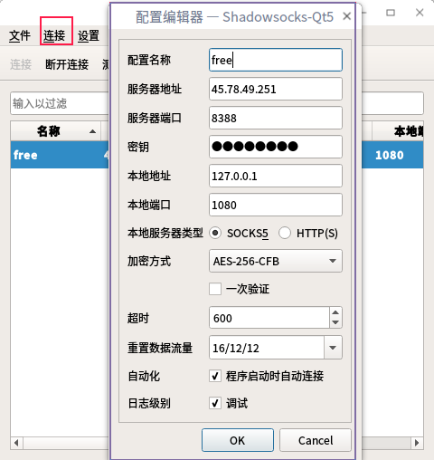
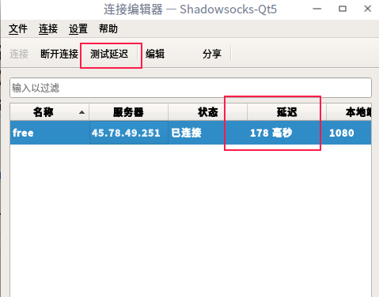
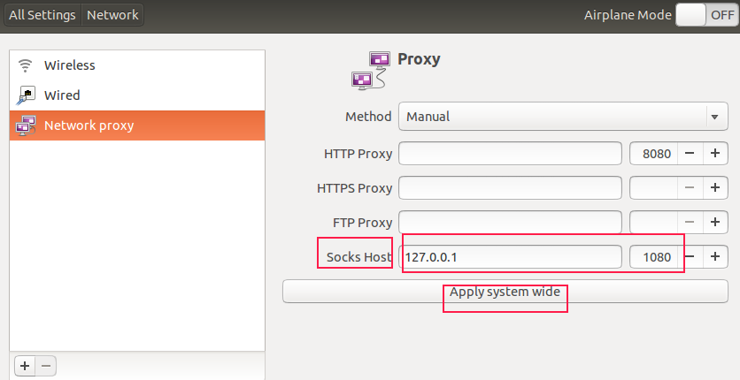
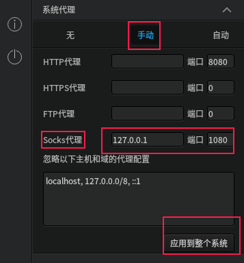
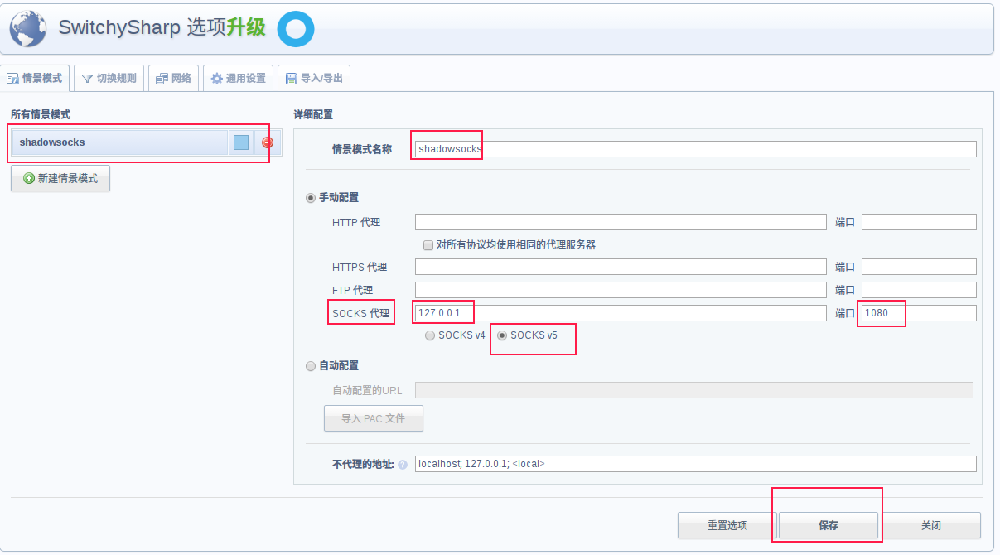
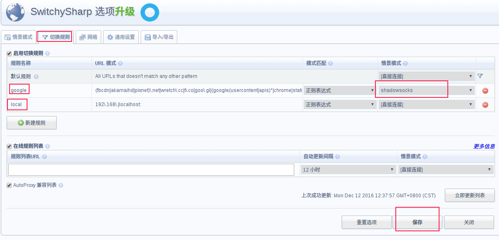

下载安装小飞机
sudo add-apt-repository ppa:hzwhuang/ss-qt5
sudo apt-get update
sudo apt-get install shadowsocks-qt5
配置代理
- 配置账号
如图所示
点击连接，配置自己的代理服务器的IP地址，密码，端口等。仿照我填的那样填写。

然后，点击测试延迟，看看有没有出现延迟，出现了，那么就是连接上了。

本地配置
代理那里，方法请选择手动，Socks主机位置填写的是你Shadowsocks里的本地地址IP，我的都是127.0.0.1，端口也是一样。
然后，点击应用到整个系统。
- Ubuntu这里是这样的

- Deepin是这样的

浏览器插件
此时你并不能科学上网，因为这个方式并不是所谓"全局代理"，所以你需要配置一下你的浏览器。我所使用的是Chrome，然后安装SwitchySharp插件，市场访问不了可以搜一下墙内的资源，跨平台所以win的也能用，拖放进去而已。
记住要打开Chrome的扩展界面，才可以把离线插件拖进行进行安装。为了方便大家安装，这里我提供下载链接。链接失效请联系我.
下载地址 密码: fjfq
Chrome代理设置
- 首先，我们确保已在Chrome浏览器中安装好了Proxy SwitchySharp扩展.
进入选项页后，我们在情景模式中，新建一个模式。
名称随便填写
然后按照我的截图那样填写，千万不要填错了。
shadowsocks使用的就是SOCKS v5的协议，ip和端口号要跟系统设置的一致。
然后点击保存。

2.设置切换规则
然后点击“切换规则”，分别新建两条规则。
本地规则，选择正则表达式
目的是让浏览器可以访问局域网等此类网址时候，不适用任何代理，即可直接访问。192\.168\.|localhost国外规则，选择正则表达式
让我们访问国外的网址的时候，就可以通过代理进行翻墙访问了。(fbcdn|akamaihd|pixnet)\.net|wretch\.cc|t\.co|goo\.gl|(google(usercontent|apis)*|chrome|staticflickr|imdb|ytimg|gstatic|html5rocks|amazonaws|github|tumblr|addthis|wordpress|blogger|(blog|app)spot|friendfeed|twitter|facebook|youtube|dropbox|feedburner|googleapis|android)\.com

自动切换代理
最后保存之后，再点击浏览器上面的Proxy SwitchySharp扩展图标，点击勾选其中的自动却换模式,即可在浏览网页
时，让扩展自动根据之前的规则来判断使用何种代理了，而不需要我们自己受到切换了了。
最后，根据自己的情况设置是否开机自启动。
完成
可以自由翻墙了。。。